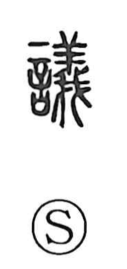

議

Kun: hakaru | On: gi
to discuss ・ discussion ・ consultation
Explanation
議 combines 言, words, with the sound element 義. 義 concerns a sheep offered to the gods: the animal is examined and found free of defects, fit for the offering. It therefore carries the sense of what is right or acceptable.
議 brings that search for rightness into speech. It probably first meant consulting the gods, asking for the divine judgement before settling a matter. A proposal is examined and weighed so that the proper course can be found.
From sacred consultation, the meaning broadens to deliberating, discussing, and arguing a case. The character can also name what is brought forward in discussion—an opinion, proposal, or question requiring consideration. The shared purpose is to determine what should be accepted as right.